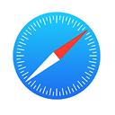
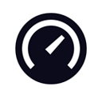

听松阁导航
归来卧松云，微凉送晚风。枕上听松语，槛外看潮生!
我的博客
公子云盘

网络书签
在线音乐
在线视频
古典
小视频
4K壁纸
私人照片
随机MV
Bing壁纸
网址导航
以针会友

Notion站点
花间集
随机诗文
古诗词动画
360壁纸库
移动音乐播放器
超酷音乐播放器
德云社
毒鸡汤
在线小游戏
openlist
 公子云盘
公子云盘 在线音乐
在线音乐 在线视频
在线视频 古典
古典 小视频
小视频 私人照片
私人照片 随机MV
随机MV Bing壁纸
Bing壁纸 网址导航
网址导航 古诗词动画
古诗词动画 在线小游戏
在线小游戏 openlist
openlist